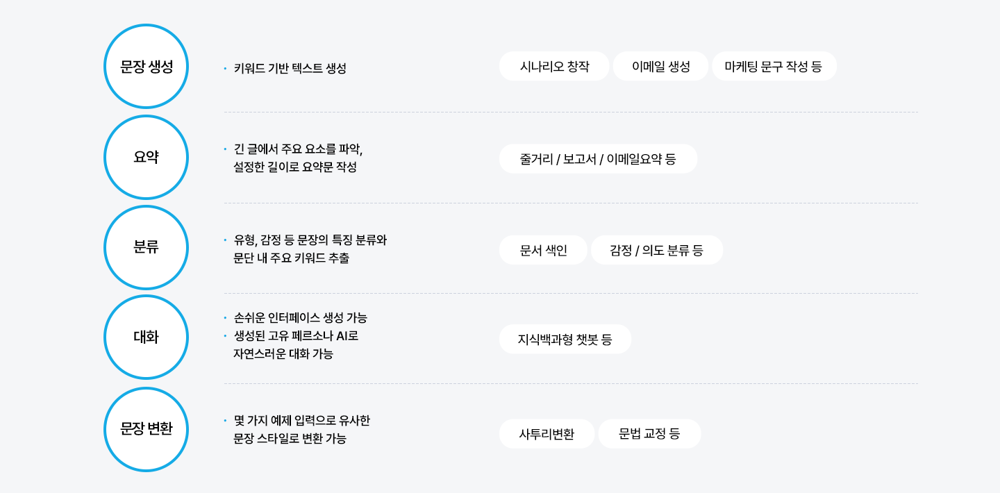
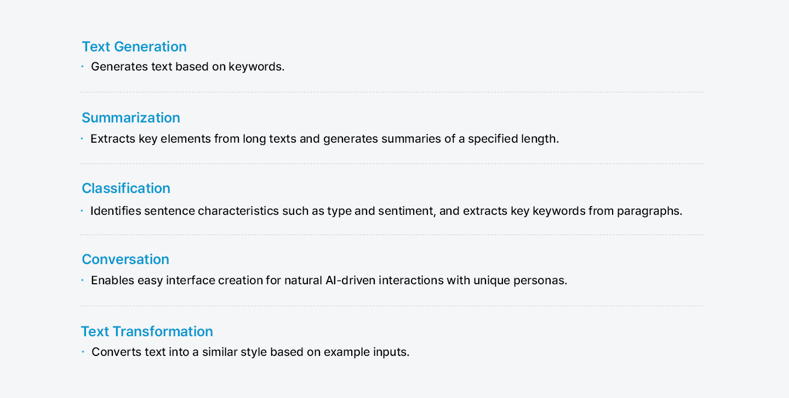
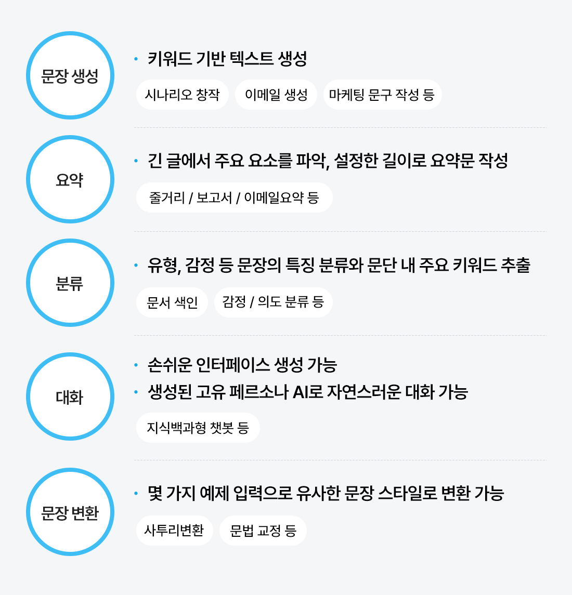
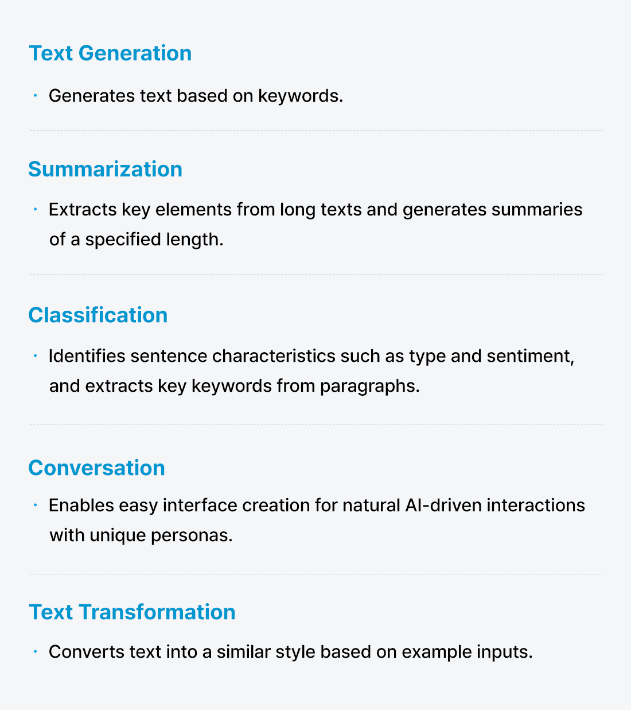
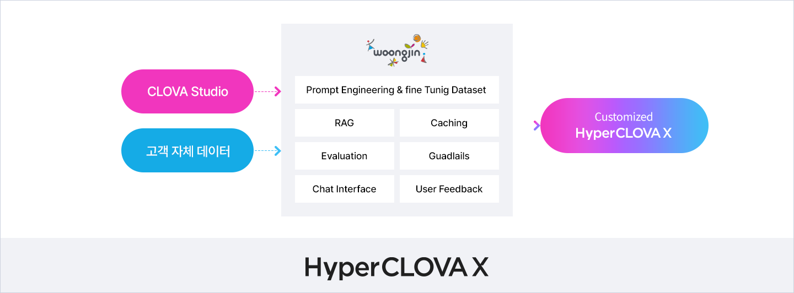
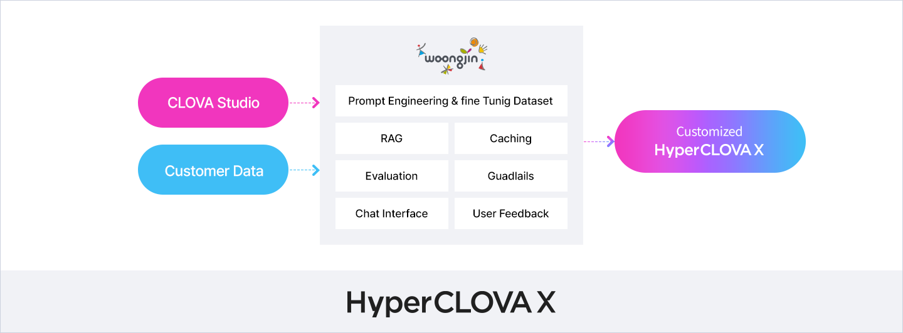
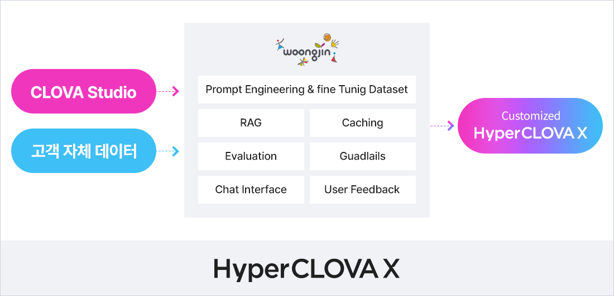

NAVER Cloud Platform이란?
네이버 생태계를 기반으로 한 클라우드 플랫폼입니다. 클라우드 인프라부터 AI, 빅데이터, 보안까지 통합 서비스를 제공합니다.기업은 국내 규제에 최적화된 안정성과 글로벌 확장성을 바탕으로 디지털 전환을 가속화할 수 있습니다.
NAVER Cloud Platform
네이버 클라우드 플랫폼은 국내 유일 Hyperscale 클라우드 핵심 기술을 바탕으로, 클라우드 인프라부터 AI 혁신 기술까지 제공합니다. 비즈니스의 새로운 기회와 가능성이 지속적으로 발굴될 수 있는 클라우드 환경을 만나보세요.
안정적인 규모의 인프라
- 국내 최대 클라우드 서비스 제공
- 산업 환경에 따른 맞춤 서비스 제공
- 공공・금융 등 규제 시장에서도 안전한 보안 환경
비즈니스 혁신을 위한 AI 서비스
- 양질의 데이터를 바탕으로 학습된 하이퍼스케일 AI
- 고객 니즈에 따른 다채로운 AI 서비스 제공
국내 최대 클라우드 서비스와 규모
NAVER Cloud Platform은 국내 클라우드 서비스 제공사 중 최대 클라우드 서비스를 제공합니다. 네이버 포탈/라인 등 이미 대규모의 사용자를 보유하고 있는 온라인 서비스와의 융합을 통해 디지털 혁신을 시작하세요. 뿐만 아니라, 해외 10여개 지역에 운영 중인 데이터 센터는 24시간/365일, 고객의 서비스가 전 세계 모든 곳에 닿을 수 있도록 합니다. 국내에서는 용도에 따라 민간/공공/금융 클라우드 존을 운영하며, 최고 수준의 데이터 센터 운영 기술력을 바탕으로 서비스 안전성을 제공하고 있습니다.
강력한 보안 환경
네이버 클라우드 플랫폼은 글로벌 기준을 충족하는 강력한 보안 환경을 제공합니다. 국내외 최고 수준의 보안 역량을 바탕으로, 산업별 규제 준수를 지원하며 기업이 안전하게 클라우드를 운영할 수 있도록 합니다.
국내외 최다 보안 인증 취득
- 국내외 14개 보안 인증 획득으로 세계적인 보안 기술력 입증
- 국내 CC인증을 받은 하드웨어 및 보안 장비 사용
- 서비스 안정성과 정보 보호 관련한 국제 인증 다수 취득
/ ISMS CSAP MTCS CBPR
빈틈없는 보안 서비스 포트폴리오
- 솔루션 구축부터 운영, 전문가 보안 관제까지 One-Stop 보안서비스 제공
- 9개 분야 22개 보안 서비스 포트폴리오 보유
암호화 데이터 보호 위협 탐지
대응
HyperCLOVA X
HyperCLOVA X는 네이버의 자체 기술로 개발된 초대규모 AI로, 세계에서 3번째로 공개된 하이퍼스케일 AI 모델입니다. 양질의 한국어 데이터를 바탕으로 학습된 HyperCLOVA X는 한국의 문화와 맥락을 가장 잘 이해합니다.
한국 문화에 대한 높은 이해도
- 한국어의 언어적/문화적 특징을 반영한 성능 평가 시험 (K-MMLU)에서 경쟁사 대비 우수한 성능 입증
- 한국어 문맥 이해 및 표현력이 뛰어나, 더 자연스러운 한국어 생성 가능
뛰어난 외국어 역량
- 영어, 일본어, 중국어 등 주요 외국어를 보다 자연스럽고 문맥에 맞게 한국어로 번역
- 한국어 사용자 중심의 다국어 처리로 언어 장벽을 효과적으로 해소
비용 효율성을 높인 토큰
- 한국어 최적화 토크나이저를 적용해 텍스트를 더 효율적으로 분할
- 빠른 처리 속도를 유지하면서도 AI 이용 비용 절감
CLOVA Studio
CLOVA Studio는 초대규모 AI HyperCLOVA 기반의 No Code AI 도구입니다. CLOVA Studio를 활용해 누구나 쉽게 AI를 개발하여 읽기, 쓰기, 요약, 상담 등 필요한 영역에서 업무 생산성과 완성도를 더 효과적으로 향상할 수 있습니다.
CLOVA Studio를 활용한 AI 개발 예시




나의 비즈니스에
가장 Fit한 AI서비스
웅진은 전문 컨설팅을 통해 개별 고객의 비즈니스에 딱 맞는 AI 서비스를 제공합니다.
고객 데이터 기반의 AI 서비스 개발로 비즈니스의 AI 전환을 성공적으로 시작하세요.



Why Woongjin?
웅진은 네이버 클라우드 플랫폼의 Gold 파트너로 다양한 영역에서 고객의 편의를 위한 서비스를 제공합니다. 고객 니즈에 따라 체계적인 서비스 진단 및 분석을 통해 고객 비즈니스에 가장 적합한 아키텍처를 설계합니다.
요구사항 분석 및 비용 최적화
- 고객 요구를 빠르게 분석하고, 최적화된 아키텍처 및 비용을 제시
구축 / 운영 / 관리 서비스
- 전문인력을 통한 구축 / 운영 / 관리 서비스 품질 향상을 위한 수시 미팅
- 진행으로 예방점검 및 빠른 복구 지원
안전하고 신뢰할 수 있는 서비스
- 웅진은 고객의 IT 환경과 산업 특성에 최적화된 DR 전략 설계 및 구축으로 신속한 복구 및 운영 최적화 지원
CONTACT CENTER
Tel : 02-2119-1110
E-mail : woongjin@woongjin.com